円山カラダ整骨院
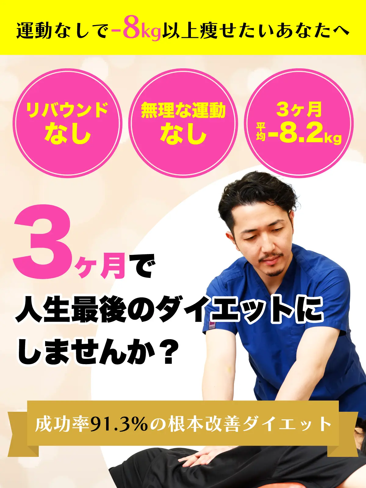
運動は苦手で続かない…
でも痩せたい！
そう思っている方だけ
読み進めてください！
始めるのは早ければ早いほど、
最短で最高の効果が得られます！
繰り返されるダイエットのお悩み
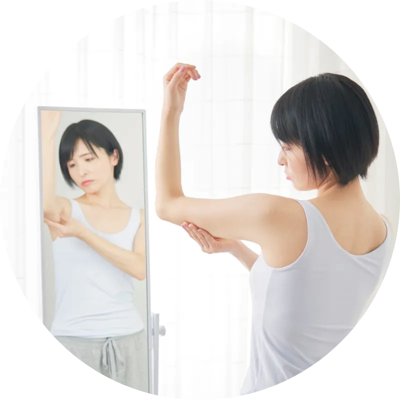
ダイエットが続かない
痩せても気を抜くとリバウンドしてしまう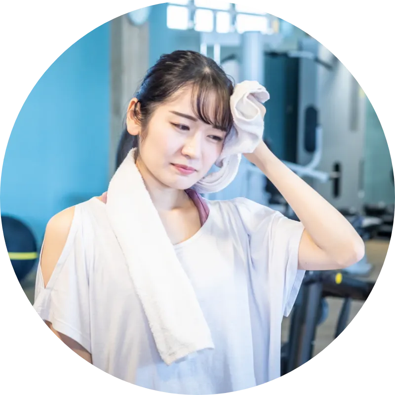
運動が苦手
運動は苦手だし、する時間もない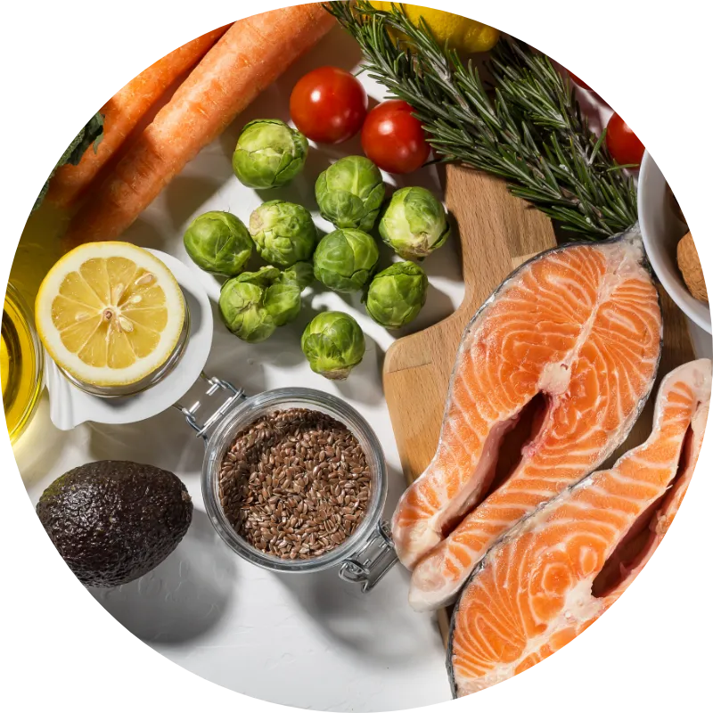
食事制限はしたくない
どうしても食べるものを我慢できないこのような理由で
「運動が苦手だから
痩せられない…」
と、思っていませんか？
何をしても痩せられなかった方は
自分自身の
太ってしまう原因と
身体にあった痩せる方法を
見つけられなかったのかも
しれません。
ダイエットが本当に
成功するのか不安な方へ
まずは実績をご覧ください
円山カラダ整骨院の
ダイエットプログラムに
多くの喜びの声をいただいております！
-
3ヶ月ダイエットコース
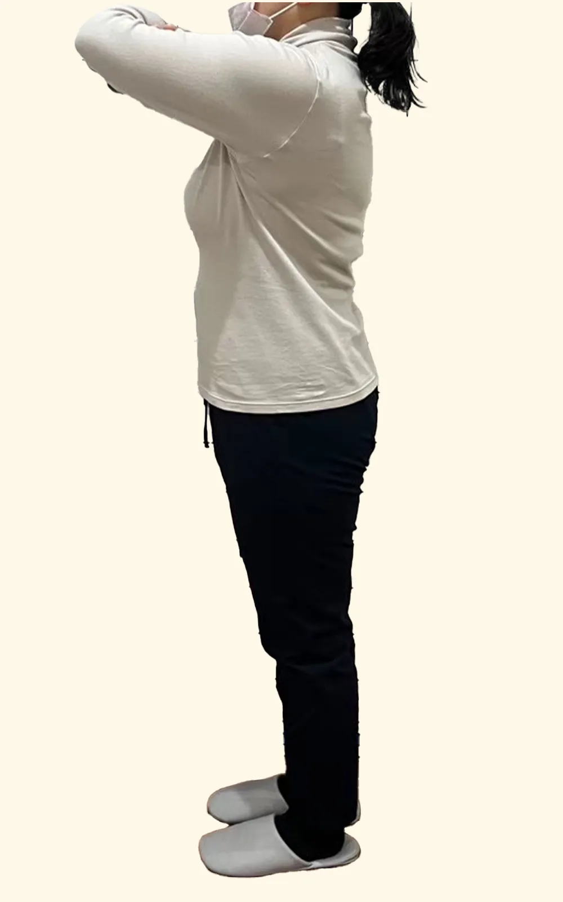
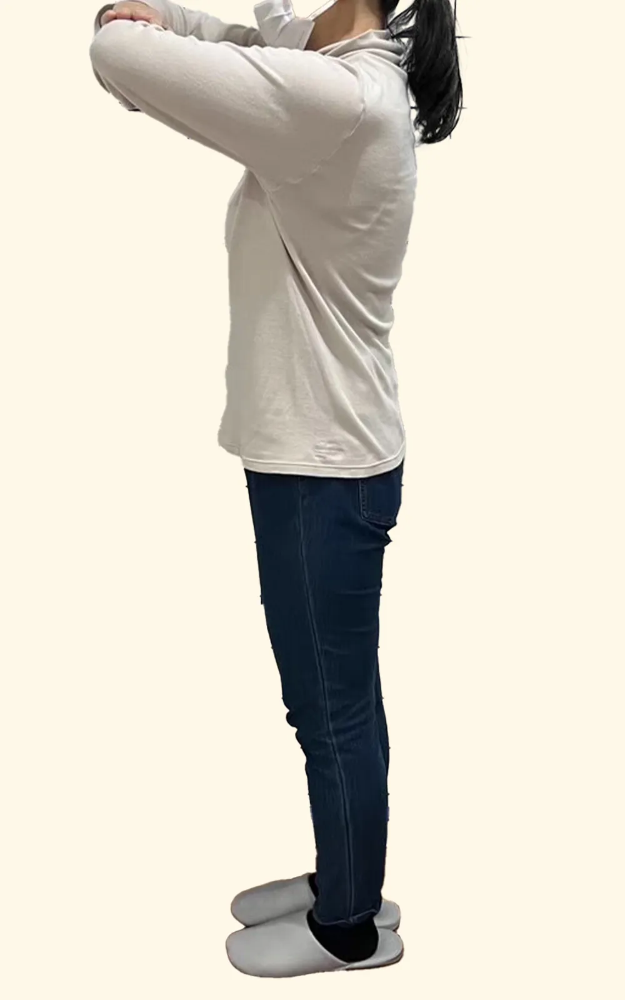
3ヶ月で
-16.3kg
50代・女性・期間：3ヶ月
※ 効果には個人差があります。
-
6ヶ月ダイエットコース
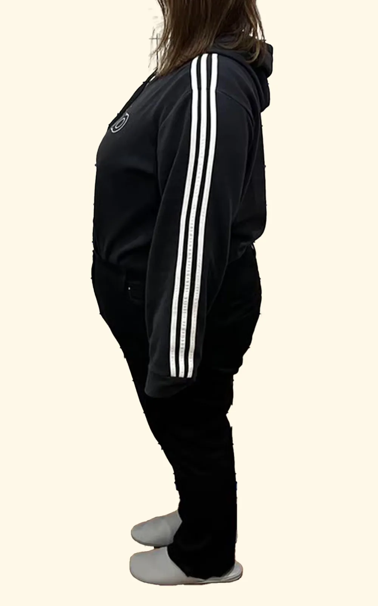
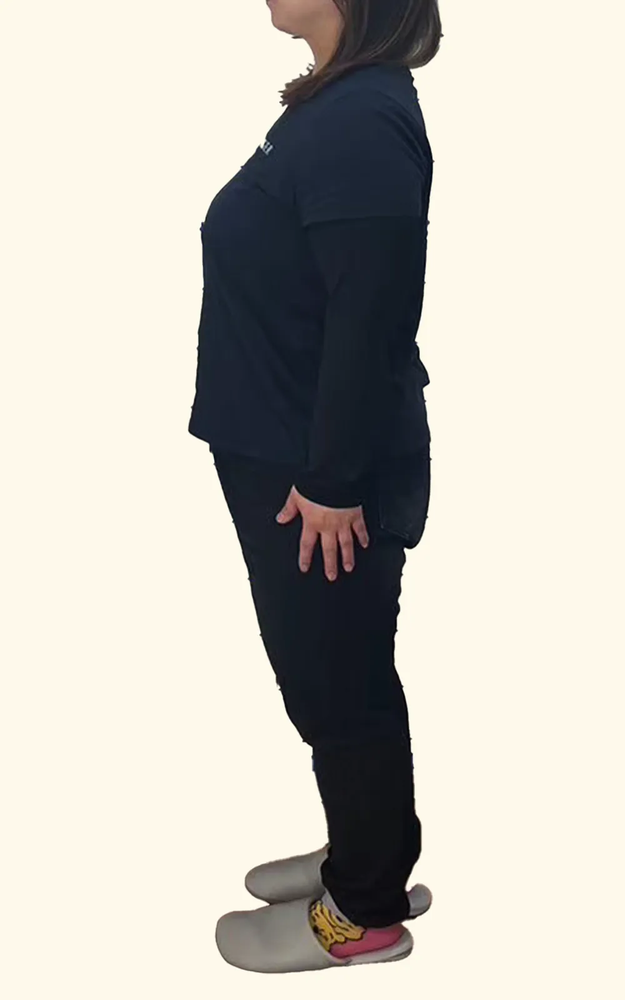
6ヶ月で
-29.8kg
30代・女性・期間：6ヶ月
※ 効果には個人差があります。
3ヶ月ダイエットコース
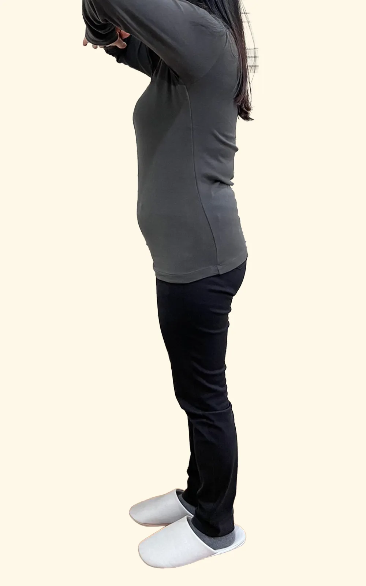
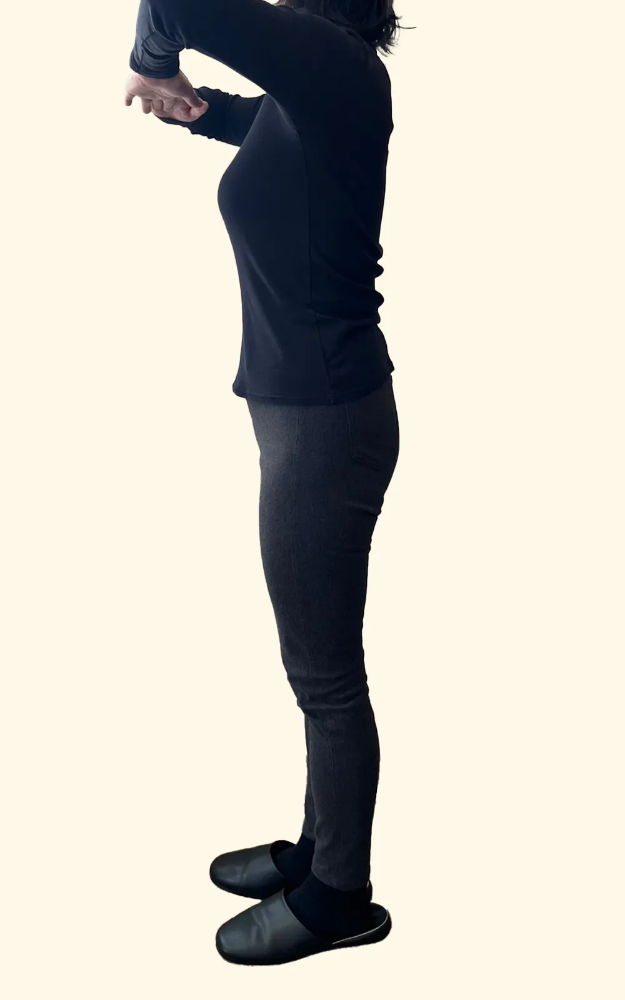
3ヶ月で
-10.0kg
50代・女性・期間：3ヶ月
※ 効果には個人差があります。
当院のダイエットをお受けいただくに
あたり、1つだけ条件があります。運動なしで3ヶ月以内に
-8kg以上
お痩せになりたい方そんなあなたは
そのまま読み進めてください！なぜ初回施術が1,100円なのか？
それはこれ以上、
間違ったダイエットで
悩んで欲しくないからです。あなたは「効果が期待できないダイエット」に
これ以上大切な時間やお金を費やす必要はありません。
私たちは、あなたが最後のダイエットに挑戦し、悩みから解放されることを願っています。
お客様一人ひとりに真摯に向き合い、確かな結果をお届けすることに全力を尽くします。
今年こそ本気で痩せたいと思うなら、ぜひお気軽にお問い合わせください。なぜ
今まで痩せられなかったのか
知っていますか？痩せない理由は
「自分に合った
ダイエット方法を知らない」
からです。世の中にはたくさんのダイエット法が出回っています。
色々試したけど痩せられない
もう体質だからしょうがない
忍耐力がなく続かないので自分は痩せられない、と
思っていませんか？自分に合ったダイエット法を
知ることで
我慢せず無理なく
スルッと痩せることが出来ます。円山カラダ整骨院では、あなたにあったダイエット法を徹底的に分析し、根本的な体質の部分から改善！
そのため一時的に痩せるのではなく、プログラム終了後も自然に痩せられている方がほとんどです。エステサロンだと…？
コース契約後にサプリメントや美容液なども勧められ、結果的に費用がかさみます。
また、エステは定期的に通い続けないと行けませんが、
体質改善ダイエットは根本から太りにくい体質を手に入れられます。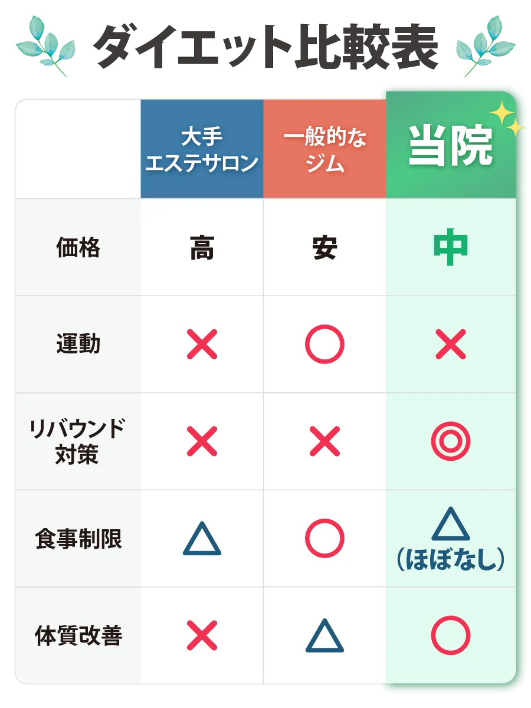
もう歳だから…
と諦めるのはもったいない！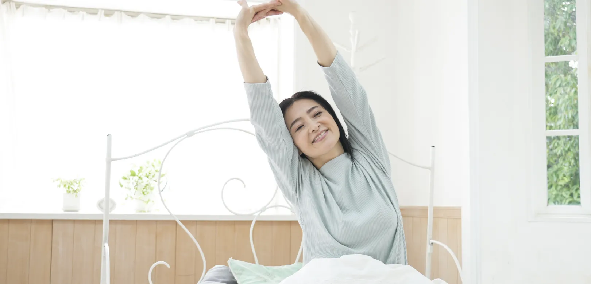
本当は痩せたいけれど
「もう歳だから…」
「若くないから代謝も落ちて痩せにくいし…」と、
年齢を理由にダイエットを諦めてしまっていませんか？体質改善ダイエットなら何歳からでも変われます！ 痩せて毎日ワクワクする人生を送りませんか？
そんなあなたに
1つ特別なご提案があります「今度こそ、本当に痩せたい！」
と決意したあなたへ。
当院で、これまでとは違う新しいダイエットを始めてみませんか？
一生続けるのではなく、これが最後のダイエットになるかもしれません。
もし「自分にはできない」「そんな簡単にうまくいくわけがない」と思うのであれば、ここでページを閉じるのも一つの選択です。
大切な時間を費やすのは、あなたにとって望ましいことではないかもしれないからです。
ただ、「少しでも気になる」と思ったなら、どうかこのまま読み進めてください。たった3ヶ月で、
理想の体型へと導きます。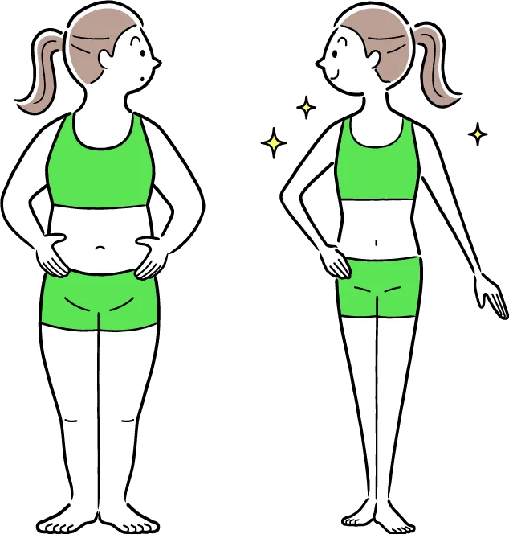
3ヶ月が長いと感じますか？
今何もしないままだと、もっと長い期間ダイエットに苦しむことになるかもしれません。
年齢に関係なく、痩せることは可能です。
始めるのが早ければ早いほど、目指す結果に早くたどり着けます！肥満遺伝子検査で、あなたが
どうすれば痩せられるかを
明確化人はそれぞれ肥満の原因が違います。
当院では、肥満遺伝子検査を行い、食生活において「脂質」「糖質」「タンパク質」の何が原因で太ってしまったのか、などを明確にします。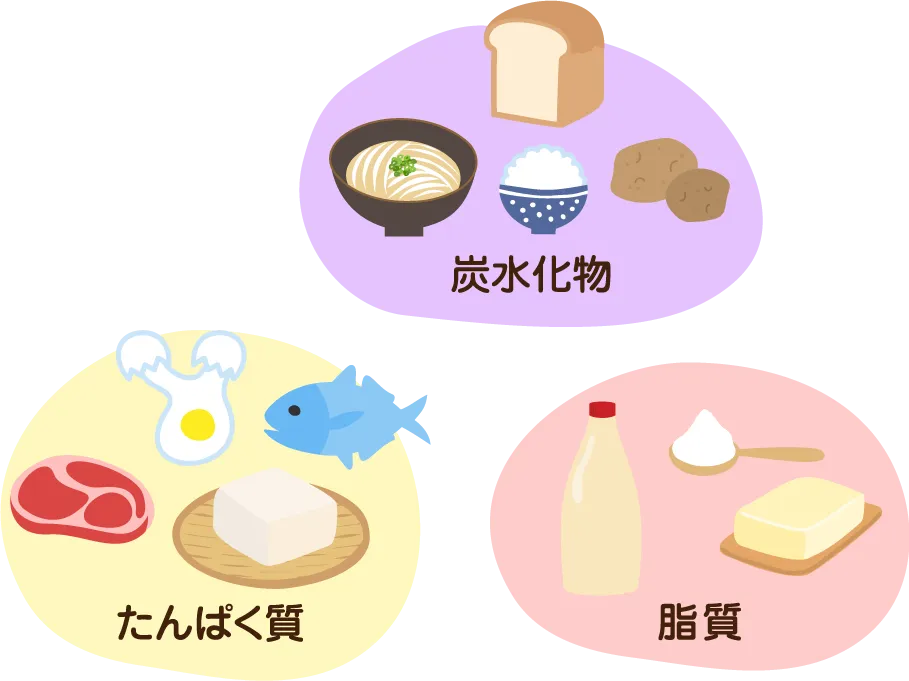
検査結果に基づき、遺伝子レベルであなたに合うオーダーメイドのダイエット方法を提案します。
円山カラダ整骨院の
ダイエットはここがすごい！なぜ円山カラダ整骨院では痩せられる？
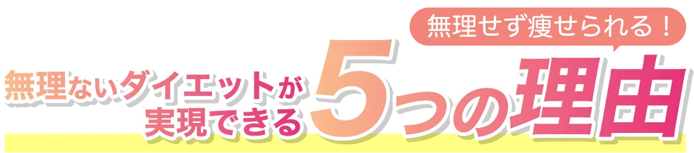
-
根本的な原因に
アプローチする
体質分析ただ痩せるだけではなく、あなたの体の状態や生活習慣をしっかり分析します。肥満の原因は一人ひとり異なり、筋肉や姿勢、代謝なども関係しています。
当院では、体の機能やバランスに着目し、根本的な体質改善を図ることで、無理なく健康的なダイエットをサポートします。 -
骨格矯正で
理想の体型を実現美容痩身整体では、姿勢や骨格を整えることによって、見た目の美しさと共に基礎代謝を高め、痩せやすい体質へと導きます。
歪んだ骨格は代謝の低下や脂肪の蓄積を引き起こすことが多いですが、整体で正しい骨格バランスを取り戻すことで、健康的で美しいボディラインを作り出します。 -
DNA分析で
あなたに最適な
ダイエット法を発見当院では、最新の肥満遺伝子検査やDNA分析を用いて、あなたの遺伝的な体質を詳しく解析します。遺伝子レベルでどのような食事が太りやすいか、どの運動が効果的かを特定し、あなたにぴったりのダイエットプランを提供します。この科学的根拠に基づくアプローチにより、個々の体質に最適な方法で、効果的かつ無理なく痩せることが可能です。 -
無理なく続けられる
食生活改善プラン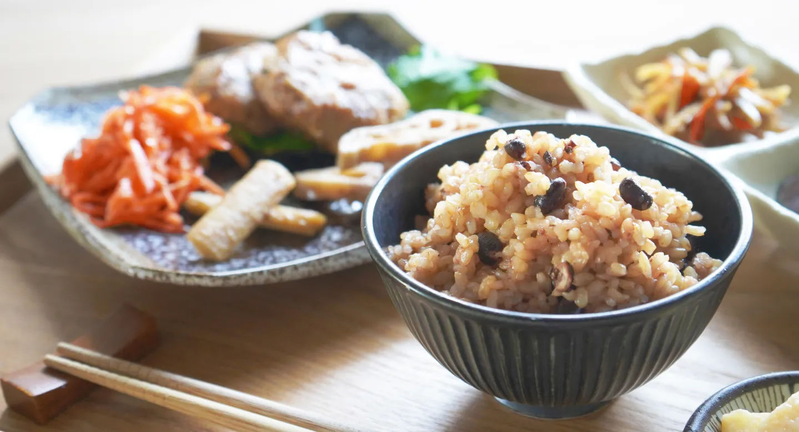
-
充実したサポート体制で
安心のダイエット一人でダイエットに取り組むのは、孤独で不安を感じやすいものです。当院では、施術後もLINEやオンラインを通じたサポートを提供しています。どんな疑問や不安もいつでも相談できる環境を整え、モチベーションを保ちながら理想の体型を目指していけるよう、しっかりとサポートします。
まずは実績をご覧ください
円山カラダ整骨院の
ダイエットプログラムに
多くの喜びの声をいただいております！-
3ヶ月ダイエットコース
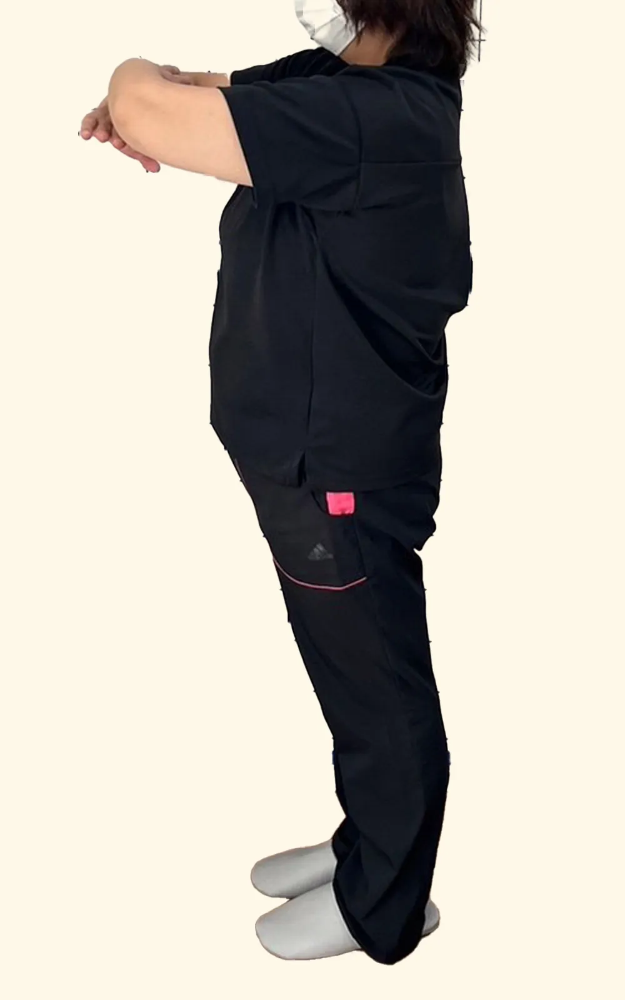
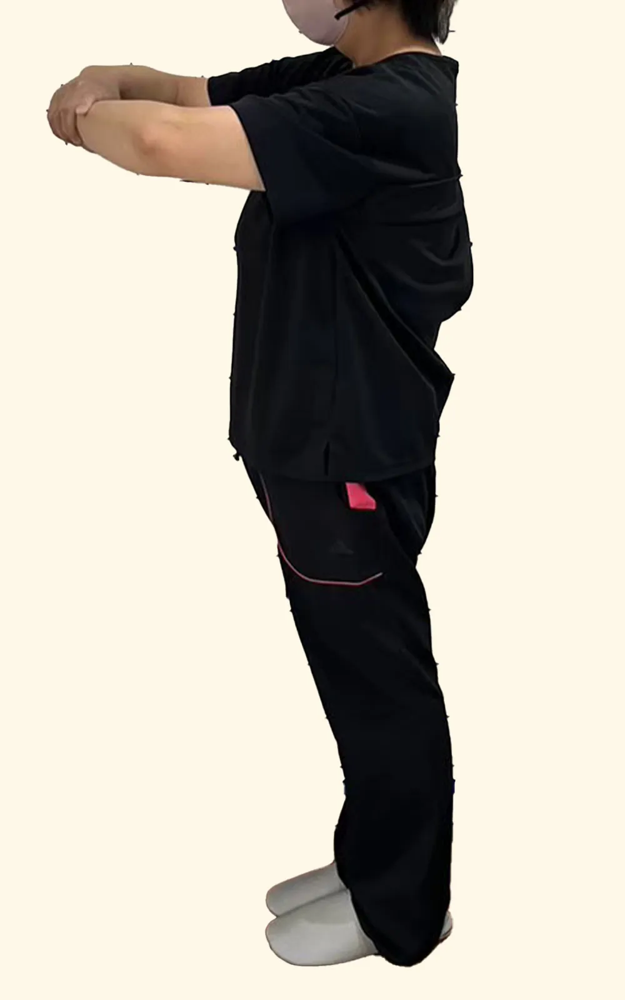
3ヶ月で
-14.6kg
50代・女性・期間：3ヶ月
※ 効果には個人差があります。
3ヶ月ダイエットコース
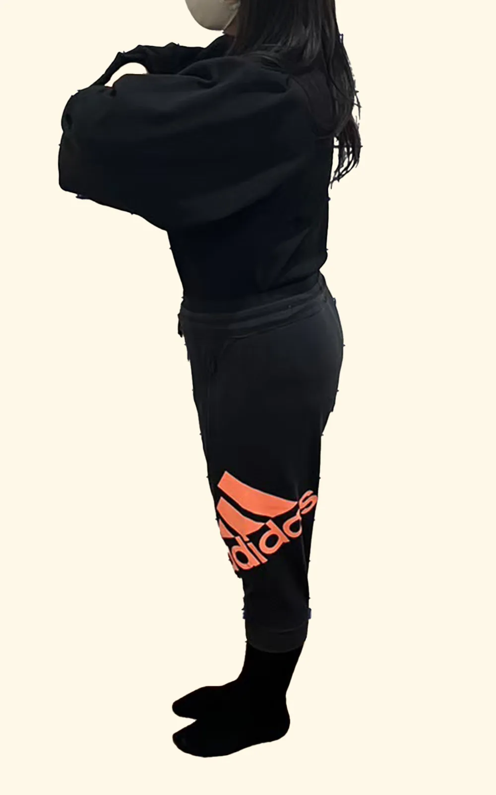
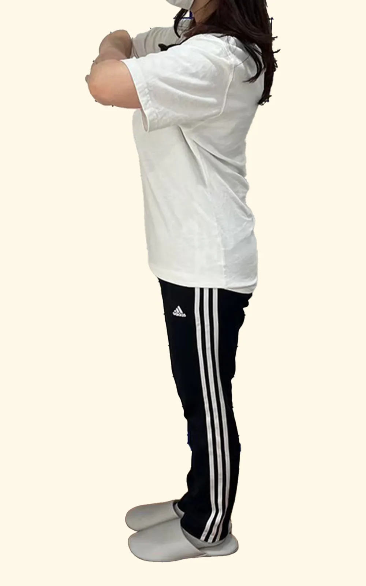
3ヶ月で
-8.1kg
40代・女性・期間：3ヶ月
※ 効果には個人差があります。
3ヶ月ダイエットコース
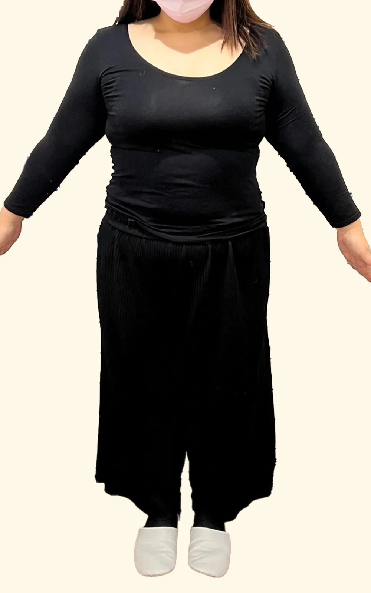
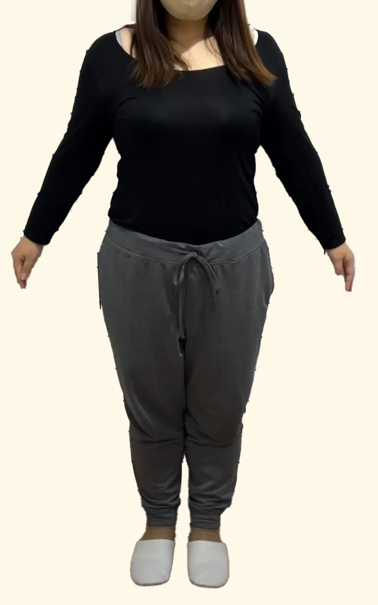
3ヶ月で
-13.8kg
30代・女性・期間：3ヶ月
※ 効果には個人差があります。
もし、あなたが8kg以上痩せたい！
と本気で思っているのであれば今すぐ
ダイエット初回カウンセリングへ！
ただし、以下のような方は
当院のダイエットには向いておりません- 運動や筋トレを頑張ってムキムキに
なりたい方 - 一時的に痩せたらいいと思っている方
- できない理由ばかりを探して行動に
移せない方 - 痩せたいと思っていない方
- 当院の指導に耳を傾けず、自己流が多い方
しかし、以下のような方は
当院のダイエットは非常にお役に立てます- ムキムキではなく健康的で
スリムに痩せたい方 - 一時的ではなく
10年先も健康的で美しくいたい方 - 理想や目標達成のために、行動に移せる方
- 3ヶ月で-8kg以上お痩せになりたい方
初回カウンセリングでは
何をするの？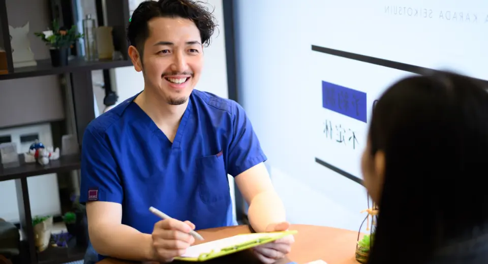
・食生活のカウンセリング
・痩身整体の体験
を初回カウンセリングにて行っております。
(1時間〜1時間半程度のお時間を頂戴しております)
実際に施術をご体験いただいた後に、不安に感じる点や相談したいことがありましたら、お気軽にカウンセラーへお聞きください。
無理な売り込みなどは、一切ありませんのでご安心ください。ダイエットプログラムの
お申し込み後の流れ-
受付
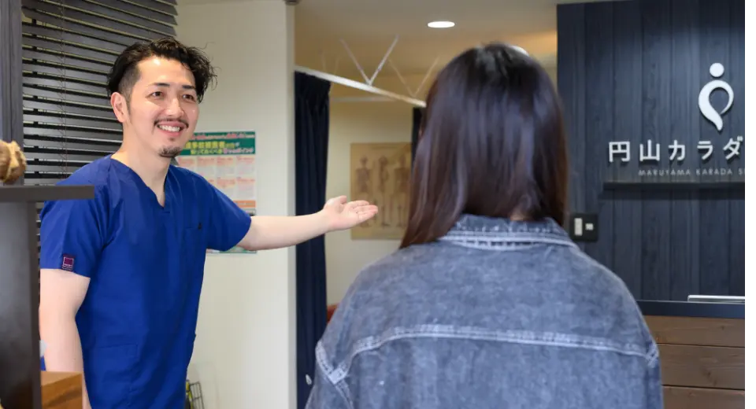
-
カウンセリングシートの
記入受付後にカウンセリングシートへご記入ください。 -
食生活のカウンセリング
あなたの食生活をしっかりと伺い、なぜ太ってしまうのか、痩せないづらいのかを導き出します。 -
測定
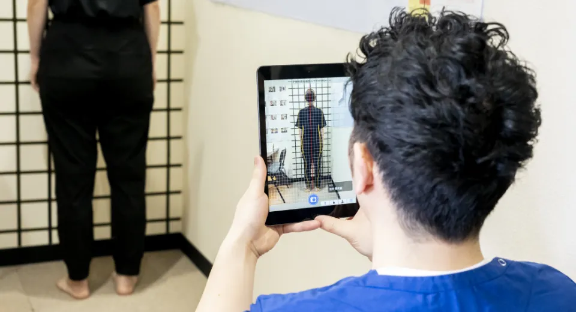
-
最適なコースのご提案
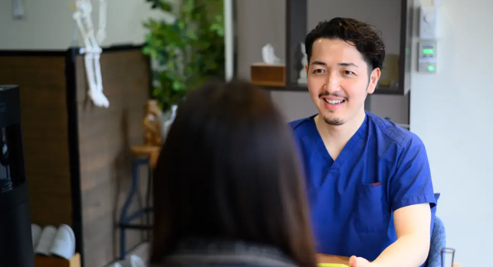
-
今後のご説明
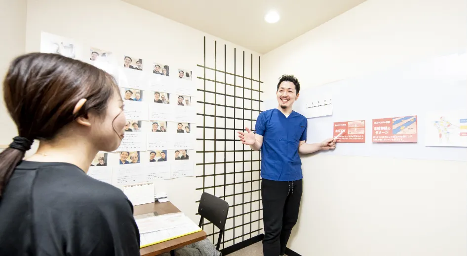
-
お会計・次回のご予約
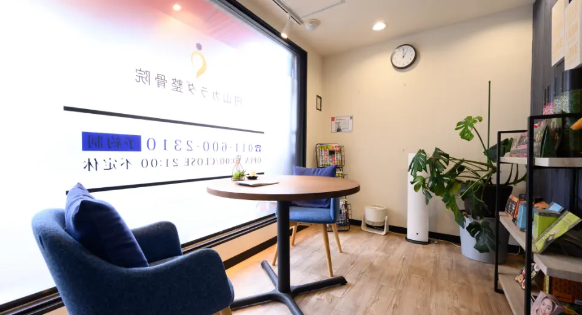
よくあるご質問
Q1. 料金はいくらぐらいになりますか？
A. カウンセリングを行い、お身体の状態を見せていただいてからのご案内となります。
Q2. 平均どれくらい痩せることが
出来ますか？A. 個人差はありますが、３ヶ月で8～10キロ程度痩せる方が多くいらっしゃいます。
※効果効能を保証するものではありません。Q3. クレジットカードは使えますか？
A. 各種クレジットカードのご利用が可能でございます。
Q4. 初回はどれくらい時間が
かかりますか？A. 1.5〜2時間程度いただいています。
Q5. 受付時間は何時までですか？
A. 初回体験の方は20時までです。
Q6. 予約制ですか？
A. 完全予約制です。
Q7. 服装に指定はありますか？
A. 指定はございませんが、動きやすい服装が望ましいです。
着替えをしていただくスペースもご用意しておりますので、着替えをお持ちいただいても結構です。アクセス
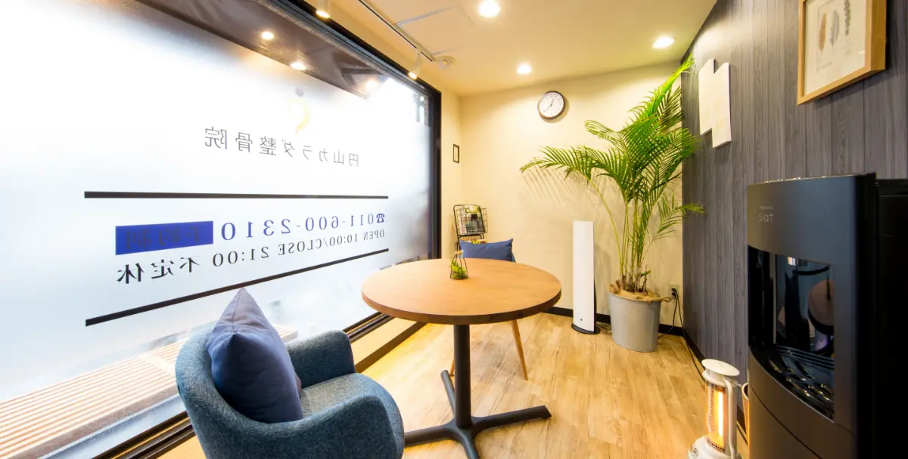
院名 円山カラダ整骨院 電話番号 011-600-2310 所在地 〒064-0823
北海道札幌市中央区
北3条西20丁目2-16受付時間 (月〜日・祝) 10:00〜21:00 定休日 不定休 アクセス 西18丁目駅
1番出口から徒歩10分